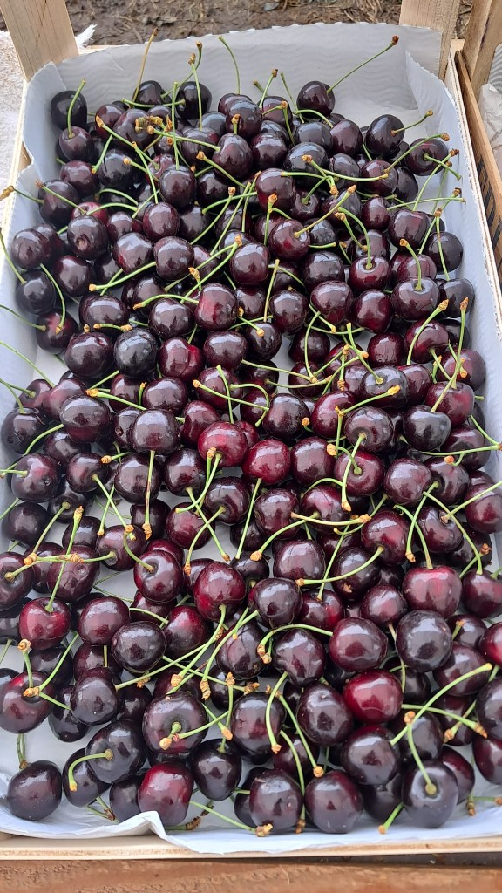

Van de eerste snoeibeurt tot de laatste oogstdag: MiCris regelt de mensen die uw bedrijf nodig heeft. Wij kennen de CAO Open Teelten, de piekmomenten en het werk.

Open teelten is een brede sector. Onder de CAO Open Teelten vallen onder meer de volgende branches — bij al deze bedrijven leveren wij vakkrachten.
Van productiemedewerkers tot specialisten — wij invullen de functies die in open teelten het werk dragen. Heeft u een specifieke aanvraag die hier niet tussen staat? Bel even, grote kans dat we het toch kunnen regelen.
Inlenersbeloning, inschaling, overwerktoeslagen en vakantietoeslag — wij zorgen dat alles klopt volgens de CAO Open Teelten. dus uw inlenersaansprakelijkheid is goed afgedekt.
In de open teelten bepaalt het seizoen alles. De ene dag is rustig, de volgende week staat de oogst op scherp. MiCris schaalt met u mee — we houden een voldoende groot bestand paraat en kennen de piekperiodes van elke deelsector.
Of u nu een paar oogstmedewerkers zoekt voor volgende week of een vast ploegje voor het hele fruitseizoen — wij regelen het.